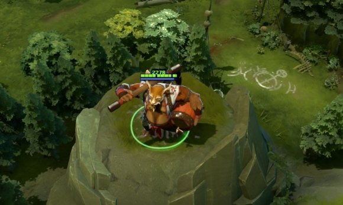
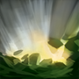
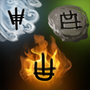

 酒仙
酒仙
背景故事
几个世纪以来，在悲叹山脉的深处，在废弃之都底部的避世村庄里，古老的奥尤社一直在进行他们神圣的沉思，通过在盛大的节日时喝醉来达到与魂灵的深度交流。曼吉克斯，神与凡人的孩子，是村中第一个拥有神之天赋，凡人之精气的天纵之才。他从小就与社中最伟大的学者一同学习，并最终通过不停的努力，获得了挑战酒仙——族群中最受尊敬的称号——的权利。 酒仙之战是饮酒和搏斗同时进行，连续九天，曼吉克斯都在不停的豪饮并且和上一任酒仙搏斗。到了晚上，他们则都是站立不稳，步履蹒跚的打斗，直到上一任酒仙终于一醉不起，曼吉克斯成为了新的酒仙。如今，年轻的新任酒仙召唤了奥尤社祖先之力，使整个族群更加迅猛。当他使用魔法的时候，他就变身为祖先的模样。正如之前的所有酒仙一样，曼吉克斯也踏上了自己的征途，向着唯一的目标前进。他走遍大陆，以酒启迪心灵，找寻着古老的族群分裂的原因——同时寻找着能够将精神和物质位面重新结合起来的方法。
雷霆一击 魔法消耗：90/105/130
冷却时间：13
|
醉酒云雾 醉酒云雾不能被躲避。 魔法消耗：50
冷却时间：8/7/6/5
|
醉拳 有一定概率闪避攻击并能造成致命一击。只要在若干秒内没有发动攻击，或没有受到攻击，醉拳的被动效果将下一次攻击或被攻击时必定触发。与其他闪避效果为非线性叠加。 必定致命一击和必定闪避的间隔时间为分开计算。 魔法消耗：0
冷却时间：0
|
元素分离 酒仙分裂成元素，产生3个各有所长的战士，生存能力极强。只要其中任何一个在召唤时间结束后存活下来，酒仙就能重生。可用神杖升级。 大地元素将继承酒仙的所有光环，以及真视宝石的真视效果。 魔法消耗：125/150/17
冷却时间：140/120/10
|